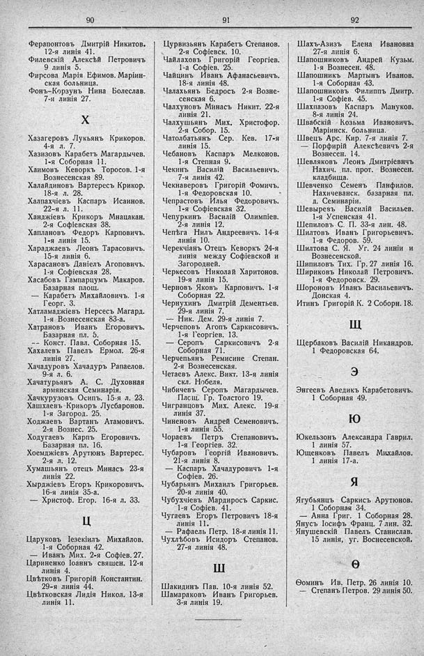

Лист источника 536
Скан

Распознанный текст
90
Ферапонтовъ Дмитрій Никитов.
12-я линія 41.
Филевскій Алексѣй Петровичъ
9 линія 5.
Фирсова Марія Ефимов. Маріин-
ская больница.
Фонъ-Корзунъ Нина Болеслав.
7-я линія 27.
Х
Хазагеровъ Лукьянъ Крикоров.
4-я л. 7.
Хазизовъ Карабетъ Магардычев.
1-я Соборная 11.
Хаимовъ Кеворкъ Торосов. 1-я
Вознесенская 89.
Халайдиновъ Вартересъ Крикор.
18-я л. 28.
Халпахчіевъ Каспаръ Исаинов.
22-я л. 11.
Ханджіевъ Крикоръ Мнацакан.
2-я Софіевская 38.
Хаплановъ Федоръ Карповичъ.
1-я линія 15.
Хараджаевъ Леонъ Тарасовичъ.
15-я линія 6.
Харасановъ Даніелъ Агоповичъ.
1-я Софіевская 28.
Хасабовъ Гампарцумъ Макаров.
Базарная площ.
— Карабетъ Михайловичъ. 1-я
Георг. 3.
Хатламаджіевъ Нерсесъ Магард.
1-я Вознесенская 83-а.
Хатрановъ Иванъ Егоровичъ.
Базарная пл. 5.
-- Конст. Павл. Соборная 15.
Хахалевъ Павелъ Ермол. 26-я
линія 27.
Хачадуровъ Хачадуръ Рапаелов.
9-я л. 6.
Хачатурьянъ А. С. Духовная
армянская Семинарія.
Хачкурузовъ Осипъ. 15-я л. 23.
Хашхаевъ Крикоръ Лусбаронов.
1-я Загород. 25.
Ходжаевъ Вартанъ Атамовичъ.
2-я Вознес. 25.
Ходугаевъ Карпъ Егоровичъ.
Базарная пл. 16.
Хоемджіевъ Арутюнъ Вартерес.
2-я л. 12.
Хумашьянъ отецъ Минасъ 23-я
линія 22.
Хырджіевъ Егоръ Крикоровичъ.
16-я линія 35-а.
— Христоф. Егор. 16-я л. 33.
Ц
Царуковъ Іезекіилъ Михайлов.
1-я Соборная 42.
— Иванъ Мих. 2-я Софіев. 27.
Цариненко Іоаннъ священ. 12-я
линія 4.
Цвѣтковъ Григорій Константин.
29-я линія 44.
Цвѣтковская Лидія Никол. 13-я
линія 11.
91
Цурвизьянъ Карабетъ Степанов.
2-я Софіевск. 10.
Чайлаховъ Григорій Георгіев.
1-а Софіев. 25.
Чайцинъ Иванъ Афанасьевичъ.
18-я линія 48.
Чалахьянъ Бедросъ 2-я Возне-
сенская 6.
Чалхуновъ Минасъ Никит. 22-я
линія 21.
Чалхушьянъ Мих. Христофор.
2-я Собор. 15.
Чатолбатьянъ Сер. Кев. 17-я
линія 15.
Чебановъ Каспаръ Мелконов.
1-я Степная 9.
Чекинъ Василій Васильевичъ.
7-я линія 42.
Чекнаверовъ Григорій Фомичъ.
1-я Федоровская 10.
Чепрастовъ Илья Федоровичъ.
1-я Софіевская 32.
Чепуркинъ Василій Олимпіев.
2-я линія 12.
Чепѣга Нилъ Андреевичъ. 14-я
линія 10.
Черекчіанъ Отецъ Кеворкъ 24-я
линія между Софіевской и
Загородней.
Черкесовъ Николай Харитонов.
19-я линія 15.
Черновъ Яковъ Карповичъ. 1-я
Соборная 22.
Чернухинъ Дмитрій Дементьев.
29-я линія 7.
— Ник. Дем. 29-я линія 7.
Черчеповъ Агопъ Саркисовичъ.
1-я Георгіев. 13.
— Серопъ Саркисовичъ 2-я
Соборная 71.
Черчепьянъ Ремисине Степан.
2-я Вознесенская.
Четаевъ Алекс. Викт. 13-я линія
скл. Нобеля.
Чибичевъ Серопъ Магардычев.
Плсщ. Гр. Толстого 19.
Чигранцовъ Мих. Алекс. 19-я
линія 37.
Чиненовъ Андрей Семеновичъ.
1-я линія 55.
Чораевъ Петръ Степановичъ.
1-я Георгіев. 32.
Чубаровъ Георгій Ивановичъ.
21-я линія 8.
— Каспаръ Хачадуровичъ 1-я
Софіев. 26.
Чубарьянъ Михаилъ Григорьев.
20-я линія 40.
Чубухчіевъ Мардиросъ Саркис.
1-я Софіев. 41.
Чугаевъ Егоръ Петровичъ 18-я
линія 11.
— Рафаель Петр. 18-я линія 11.
Чухлѣбовъ Исидоръ Степанов.
27-я линія 48.
Ш
Шакидинъ Пав. 10-я линія 52.
Шамараковъ Иванъ Григорьев.
3-я линія 19.
92
Шахъ-Азизъ Елена Ивановна
27-я линія 6.
Шапошниковъ Андрей Кузьм.
1-я Вознесен. 48.
Шапошникъ Мартынъ Иванов.
1-я Соборная 43.
Шапошниковъ Филиппъ Дмитр.
1-я Софіев. 45.
Шахпазовъ Каспаръ Мануков.
8-я линія 24.
Швабскій Козьма Ивановичъ.
Маріинск. больница.
Швецъ Арс. Кир. 7-я линія 7.
— Порфирій Алексѣевичъ 2-я
Вознесен. 14.
Шевляковъ Леонъ Дмитріевичъ
Нахич. пл. прот. Вознесен.
кладбища.
Шевченко Семенъ Панфилов.
Нахичеванск. базарная пл.
д. Семинаріи.
Шевыревъ Василій Васильев.
1-я Успенская 41.
Шепиловъ С. П. 33-я лин. 48.
Шилтовъ Иванъ Григорьевичъ.
1-я Федоров. 59.
Шилтова С. Я. Уг. 24 линіи и
Вознесенской.
Шипиловъ Тих. Гр. 27 линія 16.
Шириковъ Николай Петровичъ.
1-я Федоровск. 29.
Шороновъ Иванъ Васильевичъ.
Донская 4.
Итинъ Григорій К. 2 Соборн. 18.
Щ
Щербаковъ Василій Никандров.
1 Федоровская 64.
Э
Энгеевъ Аведикъ Карабетовичъ.
1 Соборная 49.
Ю
Юкельзонъ Александра Гаврил.
1 линія 57.
Ющенковъ Павелъ Михайлов.
1 линія 17-а.
Я
Ягубьянцъ Саркисъ Арутюнов.
1 Соборная 34.
— Анна Григ. 1 Соборная 28.
Янусъ Іосифъ Франц. 7 лин. 32.
Янушевскій Павелъ Станислав.
15 линія, уг. Вознесенской.
Ѳ
Ѳоминъ Ив. Петр. 26 линія 10.
— Степанъ Петров. 29 линія 50.